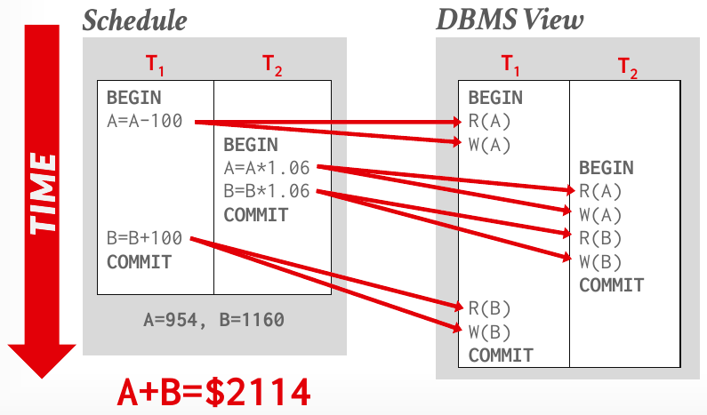
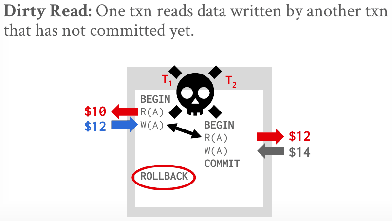
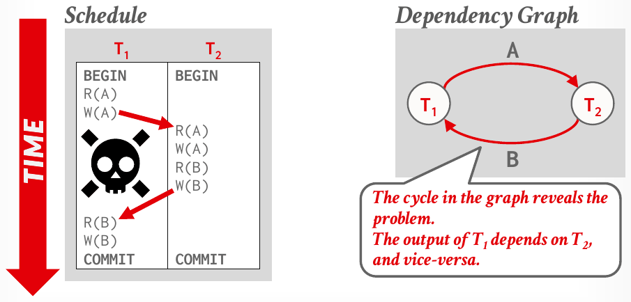
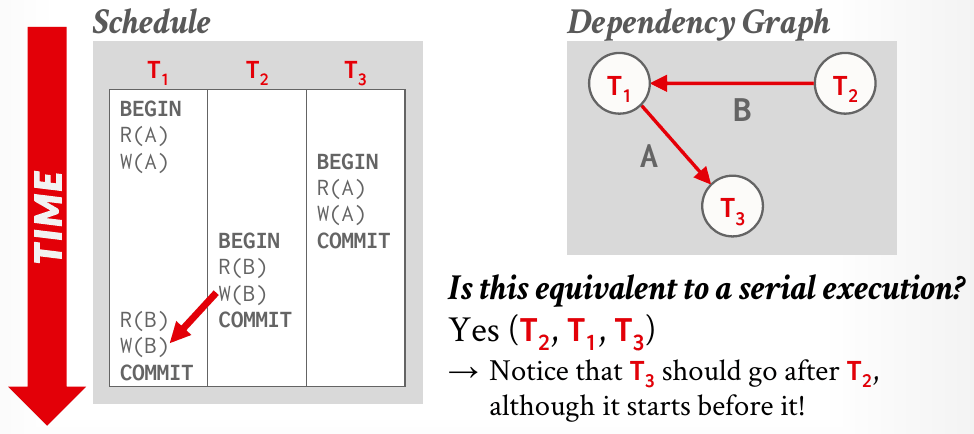
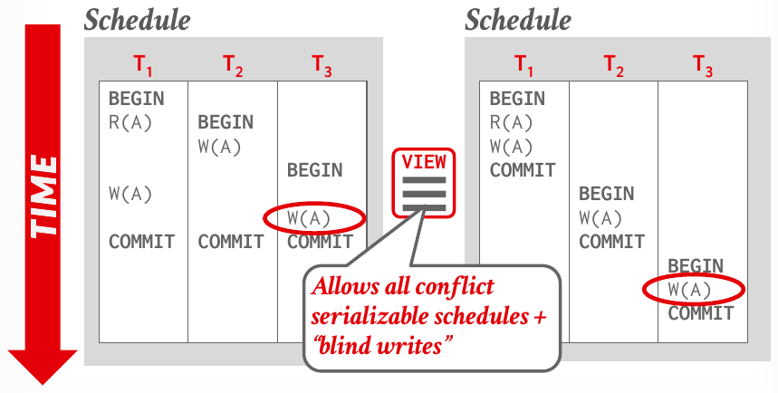

Database Internals in Go · Unit 7 · Lesson 1
Transactions, ACID, and Serializability
Define a transaction and the four ACID properties, name the anomalies that conflicting operations cause, and decide whether a schedule is serial, conflict serializable or view serializable by drawing its dependency graph.
Units 1 to 6 built a DBMS that stores data and executes queries. Slide 4 of Lecture #17 points out that it is not safe for production yet: two users can update the same account at once, and the power can fail halfway through a change. This unit is about the first problem, concurrency control. Unit 9 covers the second, recovery. This lesson sets up the vocabulary for both: what a transaction is, what the DBMS promises about it, and a precise test for when an interleaving of several transactions is correct. The next two lessons build protocols that pass that test.
Unit 3, Lesson 7: in Goetz Graefe's comparison of locks and latches, how are deadlocks among latches dealt with?
Unit 5, Lesson 4: what does a Grace hash join cost on the lecture's example tables, R with M = 1000 pages and S with N = 500 pages?
Unit 2, Lesson 2: what is sequential flooding?
Two ways a database goes wrong
Lecture #17 opens with two examples about one bank account that holds $100. The application reads the balance A, checks that A > $25, pays $25 to someone outside the database, computes A = A − $25 and writes A back.
- In example #1 the system fails after paying but before writing A. The money has left, and the database still says $100. The notes call this the durability problem, and its solution is recovery: making the database correct again after a crash.
- In example #2 two copies of the program run at once. Both read $100, both see sufficient funds, both pay $25 and both write $75. The account paid $50 and lost only $25. The notes call this the lost update problem, and its solution is concurrency control.
Slide 7's strawman solves both problems at once. It runs one transaction at a time, in the order they arrive. Before a transaction starts, it copies the entire database to a new file and makes every change there; if the transaction succeeds, the new file replaces the original, and if it fails, the DBMS deletes the dirty copy. The notes call this slow: there is no parallelism, and every transaction copies the whole database.
The better approach (slide 8) runs independent transactions concurrently, for better utilization and throughput and faster responses to users, while keeping the results correct and the scheduling fair. Arbitrary interleaving can cause two kinds of inconsistency. A temporary inconsistency is unavoidable and acceptable, like the moment between taking money from one account and adding it to another. A permanent inconsistency is the bad kind. The DBMS only cares about what is read from and written to the database. Effects in the outside world, such as an email sent by a transaction that later aborts, are beyond its reach, because it cannot roll them back. What is missing is a formal criterion for deciding whether an interleaving is valid.
Transactions and ACID
Slide 10 makes the setting precise. A database is a fixed set of named data objects A, B, C, and so on. The notes say the objects can be attributes, tuples, pages, tables or whole databases, as long as they are all of one kind. The word fixed leaves out inserts and deletes for now; Lesson 4 shows the problem they cause. A transaction (txn) is a sequence of read and write operations on those objects, such as R(A) and W(B). It is the DBMS's abstract view of a user program: the DBMS sees the reads and writes and nothing of the arithmetic in between. In SQL, a transaction starts with BEGIN and stops with COMMIT or ROLLBACK (the notes say ABORT). An abort can be requested by the transaction itself or forced by the DBMS, and even after a COMMIT request the DBMS may abort the transaction instead.
The correctness criteria are the four ACID properties of slide 11:
- Atomicity: all actions in the transaction happen, or none happen. A transaction either commits after completing all of its actions or aborts after executing some of them, and from the application's point of view it always executed all of its actions or none.
- Consistency: if each transaction is consistent and the database starts consistent, it ends up consistent.
- Isolation: the execution of one transaction is isolated from that of other transactions.
- Durability: if a transaction commits, its effects persist.
Atomicity and durability: logging or shadow paging
Slides 14 and 15 give two ways to make transactions atomic.
- Logging: the DBMS records all actions in an ordered ledger, so that it can undo the actions of aborted transactions. It keeps undo records both in memory and on disk, and after a crash it replays the log to put the database back in a correct state. Almost every DBMS uses logging, for an audit trail and for efficiency.
- Shadow paging: the DBMS makes copies of the pages a transaction modifies, and the transaction changes the copies. The pages become visible to other transactions only when the transaction commits. Recovery after a crash is instant: delete the uncommitted pages. The idea comes from IBM's System R, and few systems use it today; the slide names CouchDB, Tokyo Cabinet and LMDB. The notes explain why: it is usually slower at runtime, and systems prefer runtime performance over recovery performance.
Durability (slide 45) uses the same two mechanisms: every change of a committed transaction must persist, with no torn updates and no changes from failed transactions. Unit 9 builds logging and recovery in detail.
Consistency
Slide 16 defines consistency as the database accurately modelling the real world. In practice that means integrity constraints, such as key definitions, CHECK and ADD CONSTRAINT. The application defines them, and the DBMS ensures they hold before and after each transaction. The slide adds a note on eventual consistency, where a committed transaction may not see the updates of an older committed transaction. Developers find it hard to reason about, and the slide says the trend is to move away from such models.
Slide 47 sums up which mechanism provides each property:
| Property | Mechanisms |
|---|---|
| Atomicity | redo/undo mechanisms, concurrency control |
| Consistency | integrity constraints, replication protocols |
| Isolation | concurrency control |
| Durability | redo/undo mechanisms, replication |
The rest of this lesson, and of this unit, is about isolation.
Isolation and the bank example
Isolation lets each transaction execute as if it were running by itself, which is an easier programming model. The DBMS still interleaves the reads and writes of many transactions to get concurrency; it has to make the result look as if they ran one at a time. A concurrency control protocol is how the DBMS decides the proper interleaving of operations from multiple transactions (slide 18). There are two categories:
- A pessimistic protocol doesn't let problems arise in the first place. Two-phase locking, in Lesson 2, is one.
- An optimistic protocol assumes conflicts are rare and deals with them after they happen. Optimistic concurrency control, in Lesson 3, is one.
The lecture's running example starts with A = B = $1000. T1 transfers $100 from A to B: A = A − 100, then B = B + 100. T2 credits both accounts with 6% interest: A = A × 1.06, then B = B × 1.06. If both are submitted together, the DBMS doesn't promise which runs first, so there are two correct outcomes:
- T1 then T2: A = 900 × 1.06 = 954 and B = 1100 × 1.06 = 1166.
- T2 then T1: A = 1060 − 100 = 960 and B = 1060 + 100 = 1160.
Either way A + B = 2000 × 1.06 = $2120. Slide 21's rule is that whatever the DBMS does, the outcome must be equivalent to these two transactions running serially in some order. An interleaving that runs T1's A step, T2's A step, T1's B step and then T2's B step ends with A = 954 and B = 1166, the T1-then-T2 result, so it is fine.

The bad interleaving matches neither serial outcome: 954 + 1160 = $2114, "off by $6". Slide 24 gives the reasons to interleave anyway: disk and network I/O are slow, CPUs have many cores, and applications pause in the middle of transactions. When one transaction stalls on a resource, for example a page fault, another can continue.
#17 Concurrency Control Theory, "Isolation and concurrency" (40:59), slides 17–29: pessimistic and optimistic protocols, the bank example with its serial, good and bad schedules, and the definition of a serializable schedule.
Schedules and serializability
Slides 28 and 29 name the objects of study. A schedule is the order in which the DBMS executes the operations of a set of transactions.
- A serial schedule doesn't interleave the actions of different transactions.
- Two schedules are equivalent if, for any database state, executing the first has exactly the same effect as executing the second.
- A serializable schedule is equivalent to some serial execution of the transactions. If each transaction preserves consistency, every serializable schedule preserves consistency.
"Some" serial execution means any order. Serializability doesn't require the order in which the transactions started or committed. The slide admits this is less intuitive than start or commit order, but it gives the DBMS more freedom to schedule operations, and more freedom means better parallelism.
Conflicts and the anomalies they cause
Slide 30 asks for a notion of equivalence that can be implemented efficiently, and builds it on conflicting operations. Two operations conflict if they belong to different transactions, they are on the same object, and at least one of them is a write. Two reads never conflict. Each kind of conflict has a characteristic anomaly:
- Unrepeatable read (read-write): a transaction gets different values when it reads the same object more than once. In slide 31, T1 reads A = $10, T2 writes $19 and commits, and T1 reads A again and gets $19.
- Dirty read (write-read): a transaction reads data written by another transaction that hasn't committed yet.
- Lost update (write-write): a transaction overwrites uncommitted data of another uncommitted transaction. In slide 33, T1 writes A = $10, T2 writes A = $19 and B = Bob and commits, and then T1 writes B = Alice. The database ends up with T2's A and T1's B, a mix that no serial order produces.

Slide 30 lists two more anomalies that need more than reads and writes of a fixed set of objects: phantom reads (scan-write), which Lesson 4 covers, and write skew, which Lesson 5 covers with multi-versioning.
#17 Concurrency Control Theory, "Conflict definition" (52:32), slides 30–33: what makes two operations conflict, and the unrepeatable read, dirty read and lost update traced value by value.
Conflict serializability
Slide 34 sets the scope: the next definitions check whether a schedule is correct. They don't say how to generate a correct schedule; that is the job of the protocols in Lessons 2 and 3. There are two levels: the slide labels conflict serializability "Most Common" and view serializability "No DBMS can do this".
Two schedules are conflict equivalent if they involve the same actions of the same transactions and every pair of conflicting actions is ordered the same way in both. A schedule S is conflict serializable if it is conflict equivalent to some serial schedule (slide 35). The intuition: you can turn S into a serial schedule by repeatedly swapping two consecutive operations of different transactions that don't conflict. A swap of non-conflicting operations can't change any value read or written, so the effect stays the same. The notes add that swapping becomes too expensive with many transactions, so the DBMS uses a graph instead.
The dependency graph
A dependency graph, also called a precedence graph (slide 36), has one node per transaction and an edge from Ti to Tj if an operation of Ti conflicts with an operation of Tj and Ti's operation appears earlier in the schedule. An edge Ti → Tj says that in any equivalent serial order, Ti must come first. The test follows: a schedule is conflict serializable if and only if its dependency graph is acyclic. When it is acyclic, any topological order of the graph is an equivalent serial order.

Example #2 has three transactions: T1 reads and writes A; T3 reads and writes A and commits; T2 reads and writes B and commits; and finally T1 reads and writes B and commits. The conflicts on B give T2 → T1, and those on A give T1 → T3. The graph is acyclic, and its only topological order is T2, T1, T3.

Example #3, "inconsistent analysis" (slide 39), shows the test's limit. T1 moves 10 from A to B, and T2 reads A and B in between, after T1's write of A and before T1's write of B. The edges are T1 → T2 on A and T2 → T1 on B, so the schedule is not conflict serializable, and if T2 sums the balances it gets a wrong total. The slide then changes T2 to count how many balances are non-negative, and asks whether changing only the application logic could make the result "correct" while the schedule is still not conflict serializable. The DBMS can't tell: it sees only R(A) and R(B), not what T2 computes from them, so it treats both versions of T2 the same way.
#17 Concurrency Control Theory, "Dependency graphs" (1:01:00), slides 34–39: conflict equivalence, the graph test, and the three examples.
View serializability
Slide 40 offers an alternative, broader notion. Schedules S1 and S2 are view equivalent if, for every object A:
- if T1 reads the initial value of A in S1, T1 also reads the initial value of A in S2;
- if T1 reads the value of A written by T2 in S1, T1 also reads the value of A written by T2 in S2;
- if T1 writes the final value of A in S1, T1 also writes the final value of A in S2.
Every transaction reads the same values in both schedules, and the database ends with the same values, so the two have the same effect. A schedule is view serializable if it is view equivalent to some serial schedule.

The writes of A by T2 and T3 are blind writes: a transaction writes an object without reading it first, "regardless of its original value" in the notes' words. View serializability allows every conflict-serializable schedule plus schedules like this one, whose cycles run through blind writes that nobody reads. The notes call view serializability a "weaker notion"; read that as a weaker requirement, which admits a broader set of schedules.
Slide 43 explains why systems don't use it. View serializability allows only slightly more schedules than conflict serializability, and it is difficult to enforce efficiently. Lecture #18's recap (slide 2) adds that there is no efficient way to verify it and no DBMS that supports it. Neither definition admits every schedule you would call serializable, because the DBMS doesn't understand the meaning of the operations or the data (Example #3 again). In practice, conflict serializability is what systems support, because it can be enforced efficiently.
Slide 44 draws the result as nested sets:
Serial ⊂ Conflict Serializable ⊂ View Serializable ⊂ All Schedules
#17 Concurrency Control Theory, "View serializability" (1:07:18), slides 40–44: the three rules, the blind-write example, why no system enforces it, and the universe of schedules.
What the projects do with this
Neither BusTub nor the Go port ever draws a dependency graph. Slide 48 calls concurrency control automatic: the system inserts lock and unlock requests itself and schedules the actions of different transactions, so that the result is equivalent to running them one after the other in some order. The graph is how you check that a protocol keeps that promise. Project 4 implements optimistic multi-version concurrency control in the Go port. Its strongest isolation level, SERIALIZABLE, is checked with the backward validation of Lesson 3, extended for inserts and deletes as Lesson 4 explains. Until then, in Project 3, every SQL statement already runs in its own transaction, which only needs Begin, Commit and Abort.
Work it out
Decide each one on paper before opening the result.
-
What to think about
Take one object at a time. Which pairs of operations on it conflict, and which of the two comes first?
The method
On A, T1 writes before T2 writes. On B, T2 writes before T1 writes. Each write-write pair gives one edge, from the earlier writer to the later one.
The result
Edges T1 → T2 (A) and T2 → T1 (B): a cycle, so the schedule is not conflict serializable. That matches the outcome: A holds T2's value and B holds T1's, which neither serial order produces.
-
What to think about
For view serializability, ask where each transaction's read of A gets its value, in the schedule and in each of the two serial orders.
The method
List every conflicting pair on A with its direction. Then check rule 2 of view equivalence for both serial orders: in T1, T2 the second transaction reads the first one's write, and so it does in T2, T1.
The result
T1:R(A) before T2:W(A) gives T1 → T2, and T2:R(A) before T1:W(A) gives T2 → T1: a cycle, so it is not conflict serializable. It is not view serializable either: in the schedule both transactions read the initial A, but in either serial order the second one reads the first one's write. Both payments go out, and the final balance reflects only one of them.
The homework behind these questions
The questions marked HW5 come from CMU's Homework #5: Question 1, with the original figures. Work each one out on paper first, then click the option you got. The quiz tells you at once whether it matches CMU's official answer, and explains why. To compare your working step by step, open the official solutions for Question 1.
Check your understanding
HW5 Q1(a)iv, true or false: "Every view-serializable schedule is always conflict-equivalent to at least one conflict-serializable schedule." Which assessment agrees with the official solution?
HW5 Q1(a)v: do conflict-serializable schedules prevent unrepeatable reads and dirty reads?
The remaining questions use HW5 Question 1(b)'s schedule of four transactions. Time increases from left to right, unlike the slides, where it runs downward.
| t1 | t2 | t3 | t4 | t5 | t6 | t7 | t8 | t9 | t10 | |
|---|---|---|---|---|---|---|---|---|---|---|
| T1 | W(B) | W(A) | ||||||||
| T2 | R(C) | R(A) | ||||||||
| T3 | W(B) | W(C) | R(D) | |||||||
| T4 | R(D) | W(B) | W(A) |
HW5 Q1(b)ii: which set is exactly the set of edges of the schedule's dependency graph?
HW5 Q1(b)i and (b)iii: is the schedule serial, and is it conflict serializable?
HW5 Q1(b)iv: is the schedule view serializable?
Primary sources: CMU 15-445/645 Fall 2025 Lecture #17 slides 4–48 and notes; Lecture #18 slide 2; Homework #5 Question 1, parts (a)iv, (a)v and (b)i to (b)iv, and its official solutions; the Project #4 writeup (overview and Task 4.4); the Go port's intro_to_db/concurrency package documentation.